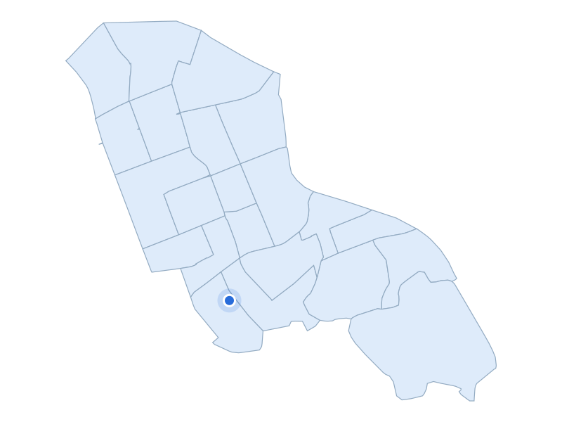

부동산 데이터 | 신혼부부가 사는 곳
거주 수 6위 · 서울 강남구

강남구 양재천 영동4교 인근 수변길
지역 자료사진 · 촬영 2019 · CC BY 4.0 / 공공누리 제1유형
주거·생활권을 실제 장소와 함께 비교합니다
거주 신혼부부 · 2024년
9,321쌍
주거 특징·랜드마크
강남구 개포동에는 1980년대에 사용승인된 개포주공6단지와 2020년대에 승인된 개포자이프레지던스가 함께 있습니다.
주거 특징·랜드마크
같은 개포동 안에서도 아파트가 조성된 시기가 크게 다릅니다.
주거 특징·랜드마크
양재천 산책로는 주거지 주변의 수변 보행 공간입니다.

서울 강남구 · 실제 가격 집계구역
파란 점: 단지 위치
지역 아파트 실거래 중위값
30억 3,000만원
지역 거래 235건
단지 사례
개포래미안포레스트
31억 9,500만원
단지 거래 10건
2026-05-01 ~ 2026-10-31 계약
전용 83~85㎡ · 아파트 매매 · 취소 제외
편집 대표시안 · provisional · 실측 타이밍 대기
6위는 서울 강남구, 9,321쌍입니다.
강남구 개포동에는 1980년대에 사용승인된 개포주공6단지와 2020년대에
승인된 개포자이프레지던스가 함께 있습니다.
같은 개포동 안에서도 아파트가 조성된 시기가 크게 다릅니다.
양재천 산책로는 주거지 주변의 수변 보행 공간입니다.
같은 조건으로 집계한 강남구 거래 235건의 중위값은
30억3,000만원입니다.
개포동의 개포래미안포레스트 단지 사례는 같은 조건 10건의 중위값이
31억9,500만원입니다.